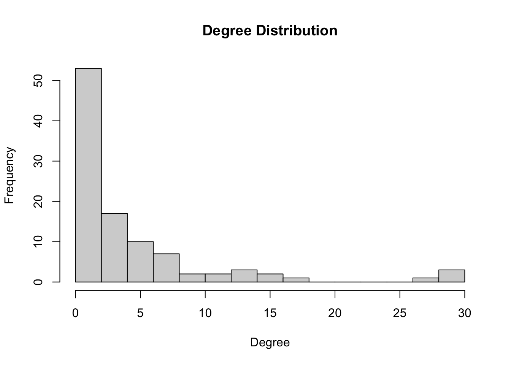

Week 5 - Final bestand
8 oktober (datum laatste aanpassing)
Prep
Start with clean workspace
rm(list = ls())
Functions
fpackage.check <- function(packages) {
lapply(packages, FUN = function(x) {
if (!require(x, character.only = TRUE)) {
install.packages(x, dependencies = TRUE)
library(x, character.only = TRUE)
}
})
}
fsave <- function(x, file = NULL, location = "./data/processed/") {
ifelse(!dir.exists("data"), dir.create("data"), FALSE)
ifelse(!dir.exists("data/processed"), dir.create("data/processed"), FALSE)
if (is.null(file))
file = deparse(substitute(x))
datename <- substr(gsub("[:-]", "", Sys.time()), 1, 8)
totalname <- paste(location, file, "_", datename, ".rda", sep = "")
save(x, file = totalname) #need to fix if file is reloaded as input name, not as x.
}
fload <- function(filename) {
load(filename)
get(ls()[ls() != "filename"])
}
fshowdf <- function(x, ...) {
knitr::kable(x, digits = 2, "html", ...) %>%
kableExtra::kable_styling(bootstrap_options = c("striped", "hover")) %>%
kableExtra::scroll_box(width = "100%", height = "300px")
}
fcolnet <- function(data = scholars, university = "RU", discipline = "sociology", waves = list(c(2015,
2018), c(2019, 2023)), type = c("first")) {
# step 1
demographics <- do.call(rbind.data.frame, data$demographics)
demographics <- demographics %>%
mutate(Universiteit1.22 = replace(Universiteit1.22, is.na(Universiteit1.22), ""), Universiteit2.22 = replace(Universiteit2.22,
is.na(Universiteit2.22), ""), Universiteit1.24 = replace(Universiteit1.24, is.na(Universiteit1.24),
""), Universiteit2.24 = replace(Universiteit2.24, is.na(Universiteit2.24), ""), discipline.22 = replace(discipline.22,
is.na(discipline.22), ""), discipline.24 = replace(discipline.24, is.na(discipline.24), ""))
sample <- which((demographics$Universiteit1.22 %in% university | demographics$Universiteit2.22 %in%
university | demographics$Universiteit1.24 %in% university | demographics$Universiteit2.24 %in%
university) & (demographics$discipline.22 %in% discipline | demographics$discipline.24 %in% discipline))
demographics_soc <- demographics[sample, ]
scholars_sel <- lapply(scholars, "[", sample)
# step 2
ids <- demographics_soc$au_id #openalex IDs
nwaves <- length(waves)
nets <- array(0, dim = c(nwaves, length(ids), length(ids)), dimnames = list(wave = 1:nwaves, ids,
ids))
dimnames(nets)
# step 3
df_works <- tibble(works_id = unlist(lapply(scholars_sel$work, function(l) l$id)), works_author = unlist(lapply(scholars_sel$work,
function(l) l$author), recursive = FALSE), works_year = unlist(lapply(scholars_sel$work, function(l) l$publication_year),
recursive = FALSE))
df_works <- df_works[!duplicated(df_works), ]
# step 4
if (type == "first") {
for (j in 1:nwaves) {
df_works_w <- df_works[df_works$works_year >= waves[[j]][1] & df_works$works_year <= waves[[j]][2],
]
for (i in 1:nrow(df_works_w)) {
ego <- df_works_w$works_author[i][[1]]$au_id[1]
alters <- df_works_w$works_author[i][[1]]$au_id[-1]
if (sum(ids %in% ego) > 0 & sum(ids %in% alters) > 0) {
nets[j, which(ids %in% ego), which(ids %in% alters)] <- 1
}
}
}
}
if (type == "last") {
for (j in 1:nwaves) {
df_works_w <- df_works[df_works$works_year >= waves[[j]][1] & df_works$works_year <= waves[[j]][2],
]
for (i in 1:nrow(df_works_w)) {
ego <- rev(df_works_w$works_author[i][[1]]$au_id)[1]
alters <- rev(df_works_w$works_author[i][[1]]$au_id)[-1]
if (sum(ids %in% ego) > 0 & sum(ids %in% alters) > 0) {
nets[j, which(ids %in% ego), which(ids %in% alters)] <- 1
}
}
}
}
if (type == "all") {
for (j in 1:nwaves) {
df_works_w <- df_works[df_works$works_year >= waves[[j]][1] & df_works$works_year <= waves[[j]][2],
]
for (i in 1:nrow(df_works_w)) {
egos <- df_works_w$works_author[i][[1]]$au_id
if (sum(ids %in% egos) > 0) {
nets[j, which(ids %in% egos), which(ids %in% egos)] <- 1
}
}
}
}
output <- list()
output$data <- scholars_sel
output$nets <- nets
return(output)
}
#Loading data
packages <- c("tidyverse", "scholar", "openalexR", "rvest", "jsonlite", "RSiena", "RSelenium", "rvest",
"lavaan", "xml2", "kableExtra", "devtools", "igraph", "network", "sna", "ggraph", "visNetwork", "threejs",
"networkD3", "RsienaTwoStep")
fpackage.check(packages)
#> [[1]]
#> NULL
#>
#> [[2]]
#> NULL
#>
#> [[3]]
#> NULL
#>
#> [[4]]
#> NULL
#>
#> [[5]]
#> NULL
#>
#> [[6]]
#> NULL
#>
#> [[7]]
#> NULL
#>
#> [[8]]
#> NULL
#>
#> [[9]]
#> NULL
#>
#> [[10]]
#> NULL
#>
#> [[11]]
#> NULL
#>
#> [[12]]
#> NULL
#>
#> [[13]]
#> NULL
#>
#> [[14]]
#> NULL
#>
#> [[15]]
#> NULL
#>
#> [[16]]
#> NULL
#>
#> [[17]]
#> NULL
#>
#> [[18]]
#> NULL
#>
#> [[19]]
#> NULL
#>
#> [[20]]
#> NULL
# make yourself known to openAlex
options(openalexR.mailto = "lucan.bovens@home.nl")
scholars <- fload("./data/processed/scholars_20240924.rda")
# save the output of your function
socdata <- fcolnet(data = scholars, university = "RU", discipline = c("sociology", "political science"),
waves = list(c(2015, 2018), c(2019, 2023)), type = c("all")) #choose if first or all?
# just to test
socdataNO_PS <- fcolnet(data = scholars, university = "RU", discipline = c("sociology"), waves = list(c(2015,
2018), c(2019, 2023)), type = c("all")) #choose if first or all?
# Let us find ego characteristics. first fish out the data
df <- socdata$data
# same complicated structure as 'scholars' thus first make a dataframe from the list in which all
# info was saved.
df_ego <- do.call(rbind.data.frame, df$demographics)
# DO NOT MESS UP THE ORDER! THUS IF YOU JOIN THIS DATA WITH YOUR OWN DATA CHECK THAT ORDER REMAINED
# THE SAME!!
View(df_ego)
demographics <- do.call(rbind.data.frame, scholars$demographics)
universities_1_2022 <- unique(demographics$Universiteit1.22)
universities_2_2022 <- unique(demographics$Universiteit2.22)
universities_1_2024 <- unique(demographics$Universiteit1.24)
universities_2_2024 <- unique(demographics$Universiteit2.24)
# Add h-index and i10-index to df_ego dataframe
df_ego <- df_ego %>%
mutate(h_index = NA_real_, i10_index = NA_real_, works_count = NA_real_, cited_by_count = NA_real_)
# Get H-index and i10-index, using openalex API (see link)
get_openalex_metrics <- function(openalex_id) {
url <- paste0("https://api.openalex.org/authors/", openalex_id)
author_data <- tryCatch({
jsonlite::fromJSON(url)
}, error = function(e) {
message(paste("Error fetching data for OpenAlex ID:", openalex_id)) #After googling for a bit, found this to know if something is running forever or whether errors show up
return(NULL)
})
if (!is.null(author_data)) {
h_index <- author_data$summary_stats$h_index
i10_index <- author_data$summary_stats$i10_index
works_count <- author_data$works_count
cited_by_count <- author_data$cited_by_count
return(list(h_index = h_index, i10_index = i10_index, works_count = works_count, cited_by_count = cited_by_count))
} else {
return(list(h_index = NA, i10_index = NA, works_count = NA, cited_by_count = NA))
}
}
# Loooop
for (i in 1:nrow(df_ego)) {
openalex_id <- df_ego$au_id[i]
metrics <- get_openalex_metrics(openalex_id)
df_ego$h_index[i] <- metrics$h_index
df_ego$i10_index[i] <- metrics$i10_index
df_ego$works_count[i] <- metrics$works_count
df_ego$cited_by_count[i] <- metrics$cited_by_count
}
View(df_ego)
#gender
# Extract first names from df_ego
df_ego <- df_ego %>%
mutate(first_name = sapply(strsplit(Naam, " "), `[`, 1))
# Credits to NV btw anyone know how to fix connection errors with the site below?
gender_scraper.NV <- function(names = "names element", web_page = "https://nvb.meertens.knaw.nl/naam/is/") {
names$first_name <- sapply(strsplit(names$Naam, " "), `[`, 1) # Extract first names from the ego characteristics dataset
names$male <- NA
names$male <- NA
names$female <- NA
for (i in 1:nrow(names)) {
web_page <- read_html(paste0("https://nvb.meertens.knaw.nl/naam/is/", names$first_name[i]))
table <- web_page %>%
rvest::html_elements("body") %>%
rvest::html_elements("table") %>%
rvest::html_table()
if (length(table) == 0) {
names$male[i] <- NA
names$female[i] <- NA
} else {
names$male[i] <- as.numeric(ifelse(table[[1]][[2, 3]] == "--", 0, table[[1]][[2, 3]]))
names$female[i] <- as.numeric(ifelse(table[[1]][[6, 3]] == "--", 0, table[[1]][[6, 3]]))
}
} # End for-loop
names <- names %>%
mutate(perc_female = case_when(is.na(female) & is.na(male) ~ NA, is.na(female) ~ 0, is.na(male) ~
1, TRUE ~ round((female/(male + female)), 2))) %>%
select(-male, -female) # Remove intermediate columns
return(names)
}
# Run gender scraper -> df_ego
df_ego <- gender_scraper.NV(names = df_ego, web_page = "https://nvb.meertens.knaw.nl/naam/is/")
View(df_ego)
check <- df_ego %>%
count(perc_female)
plot(check$perc_female, check$n)
#Gender 2
# Dichotomous gender?
df_ego <- df_ego %>%
mutate(genderdich = case_when(perc_female > 0.5 ~ "female", perc_female <= 0.5 ~ "male", TRUE ~ NA_character_))
View(df_ego)
table(df_ego$genderdich)
#>
#> female male
#> 53 47
Career age
df_works <- socdata$data$work # Assuming df_works is stored in socdata$data
# Handy: unnest df_works to get the correct format
df_works <- tibble(works_id = unlist(lapply(df_works, function(l) l$id)),
works_author = unlist(lapply(df_works, function(l) l$author), recursive = FALSE),
works_year = unlist(lapply(df_works, function(l) l$publication_year), recursive = FALSE))
#Continue
df_career_age <- df_works %>%
unnest(works_author) %>% # Unnest tibble (authors) from the (df_works) tibble
filter(au_id %in% df_ego$au_id == TRUE) %>% # authors in df_works should match authors in df_ego
group_by(au_id) %>%
mutate(min_year_pub = min(works_year, na.rm = TRUE), # Initial calculation minimum year
count_pub = n()) %>% # Count number of publications
mutate(first_year_pub = ifelse(count_pub == 1, min_year_pub, # if number of publications = 1, score is min_year_pub
{
filter_year = works_year[works_year != min_year_pub] # Filter min year
mean_pubyear = mean(filter_year, na.rm = TRUE) # Calculate mean excluding min score
valid_year = min(filter_year[filter_year >= (mean_pubyear - 25)], na.rm = TRUE) # Min year -> range mean-25
valid_year # if number of publications is not 1, then score minimum year with first year removed within range mean-25
})) %>%
# this line corrects for the warning of returning infinites that for some reason were not filtered through the first ifelse command
mutate(first_year_pub = ifelse(is.infinite(first_year_pub), min_year_pub, first_year_pub)) %>%
select(au_id, first_year_pub) %>%
distinct(au_id, first_year_pub, .keep_all = TRUE)
# Merge dataframed based on au_id
df_ego <- df_ego %>%
left_join(df_career_age, by = "au_id") %>%
mutate(career_age = 2024 - first_year_pub) # Calculate career age as the difference from 2024
View(df_ego)
Creating new prestige
variable
# If career age 0, change to 1 (to solve the dividing by 0 problem)
df_ego <- df_ego %>%
mutate(adjusted_career_age = ifelse(career_age == 0, 1, career_age))
# Calculate prestige with careeragescore = 0.xx (.33?)
careeragescore <- 0.33
df_ego <- df_ego %>%
mutate(prestige_h_index = h_index/(log(works_count + 1) * adjusted_career_age^careeragescore), prestige_i10_index = i10_index/(log(works_count +
1) * adjusted_career_age^careeragescore))
View(df_ego)
#Plotting
socdata_w2 <- igraph::graph_from_adjacency_matrix(
socdata$nets[2,,], #now, the second wave
mode = c("directed"),
weighted = NULL,
diag = FALSE,
add.rownames = NULL,
add.colnames = NULL
)
plot(socdata_w2,
vertex.color = ifelse(df_ego$discipline.24 == "sociology", "red", "blue"), # use actor attributes for plotting.
vertex.label = NA,
edge.width = 0.2,
edge.arrow.size =0.2)
socdataNO_PS_w2 <- igraph::graph_from_adjacency_matrix(
socdataNO_PS$nets[2,,], #now, the second wave
mode = c("directed"),
weighted = NULL,
diag = FALSE,
add.rownames = NULL,
add.colnames = NULL
)
plot(socdataNO_PS_w2,
vertex.color = ifelse(df_ego$discipline.24 == "sociology", "red", "blue"), # use actor attributes for plotting.
vertex.label = NA,
edge.width = 0.2,
edge.arrow.size =0.2)
#Descriptives
table(df_ego$perc_female)
#>
#> 0 0.01 0.02 0.03 0.06 0.21 0.48 0.54 0.58 0.68 0.79 0.87 0.91 0.94 0.96 0.98 0.99 1
#> 39 2 2 1 1 1 1 1 1 1 1 1 1 1 1 2 4 39
table(df_ego$genderdich)
#>
#> female male
#> 53 47
hist(df_ego$perc_female)
Test
# adjacency matrix for wave 2 (2019-2023)
adj_matrix_wave2 <- socdata$nets[2, , ]
dim(adj_matrix_wave2)
#> [1] 101 101
View(adj_matrix_wave2)
#Degree calculation
network_wave2 <- igraph::graph_from_adjacency_matrix(
socdata$nets[2,,], # note: 2 shows it's second wave
mode = c("directed"),
weighted = NULL,
diag = FALSE
)
# Ensure the adjacency matrix is actually
adj_matrix_wave2 <- as.matrix(adj_matrix_wave2)
# Calculate degree (number of collaborations?)
degree_wave2 <- igraph::degree(network_wave2)
# add to frame to check
df_ego$degree_wave2 <- degree_wave2
View(df_ego)
# plot
hist(df_ego$degree_wave2, breaks = 20, main = "Degree Distribution", xlab = "Degree")

#Some RSiena testing on own data
df_network <- socdata$nets
length(df_network)
#> [1] 20402
dim(df_network)
#> [1] 2 101 101
wave1RS <- df_network[1, , ]
wave2RS <- df_network[2, , ]
# diagonal = zero
diag(wave1RS) <- 0
diag(wave2RS) <- 0
# binary ties
wave1RS[wave1RS > 1] <- 1
wave2RS[wave2RS > 2] <- 1
# put networks in array --> right format for Rsiena
net_soc_array <- array(data = c(wave1RS, wave2RS), dim = c(dim(wave1RS), 2))
dim(net_soc_array)
#> [1] 101 101 2
net <- sienaDependent(net_soc_array)
print(net)
#> Type oneMode
#> Observations 2
#> Nodeset Actors (101 elements)
adjusted_career_age <- as.numeric(df_ego$adjusted_career_age)
adjusted_career_age <- coCovar(adjusted_career_age)
h_index <- as.numeric(df_ego$h_index)
h_index <- coCovar(h_index)
prestige_h_index <- as.numeric(df_ego$prestige_h_index)
prestige_h_index <- coCovar(prestige_h_index)
dim(net)
#> [1] 101 101 2
length(adjusted_career_age)
#> [1] 101
siena_data <- sienaDataCreate(net, adjusted_career_age, prestige_h_index, h_index)
myeff <- getEffects(siena_data)
effectsDocumentation((myeff))
#> Effects documentation written to file (myeff).html .
print01Report(siena_data, modelname = "./results/rsienatestmodel1")
myeff <- getEffects(siena_data)
myeff <- includeEffects(myeff, isolateNet)
#> effectName shortName include fix test initialValue parm
#> 1 network-isolate isolateNet TRUE FALSE FALSE 0 0
myeff <- includeEffects(myeff, isolateNet, inPop, desPlus, inAct, outAct)
#> effectName shortName include fix test initialValue parm
#> 1 degree of alter inPop TRUE FALSE FALSE 0 0
#> 2 degree of ego outAct TRUE FALSE FALSE 0 0
#> 3 network-isolate isolateNet TRUE FALSE FALSE 0 0
myeff <- includeEffects(myeff, isolateNet, inPop, desPlus, inAct, outAct)
#> effectName shortName include fix test initialValue parm
#> 1 degree of alter inPop TRUE FALSE FALSE 0 0
#> 2 degree of ego outAct TRUE FALSE FALSE 0 0
#> 3 network-isolate isolateNet TRUE FALSE FALSE 0 0
myeff <- includeEffects(myeff, isolateNet, inPop, desPlus, inAct, outAct)
#> effectName shortName include fix test initialValue parm
#> 1 degree of alter inPop TRUE FALSE FALSE 0 0
#> 2 degree of ego outAct TRUE FALSE FALSE 0 0
#> 3 network-isolate isolateNet TRUE FALSE FALSE 0 0
myeff3a <- includeEffects(myeff, altX, interaction1 = "prestige_h_index")
#> effectName shortName include fix test initialValue parm
#> 1 prestige_h_index alter altX TRUE FALSE FALSE 0 0
myeff3b <- includeEffects(myeff, altX, interaction1 = "h_index")
#> effectName shortName include fix test initialValue parm
#> 1 h_index alter altX TRUE FALSE FALSE 0 0
myeff4 <- includeEffects(myeff, egoX, altX, interaction1 = "adjusted_career_age")
#> effectName shortName include fix test initialValue parm
#> 1 adjusted_career_age alter altX TRUE FALSE FALSE 0 0
#> 2 adjusted_career_age ego egoX TRUE FALSE FALSE 0 0
myAlgorithm <- sienaAlgorithmCreate(projname = "rsienatestmodel1")
#> If you use this algorithm object, siena07 will create/use an output file rsienatestmodel1.txt .
anstest1 <- siena07(myAlgorithm, data = siena_data, effects = myeff, returnDeps = TRUE)
anstest1
#> Estimates, standard errors and convergence t-ratios
#>
#> Estimate Standard Convergence
#> Error t-ratio
#>
#> Rate parameters:
#> 0 Rate parameter 1.8056 ( 0.2426 )
#>
#> Other parameters:
#> 1. eval degree (density) -1.8639 ( 0.1231 ) -0.0211
#>
#> Overall maximum convergence ratio: 0.0211
#>
#>
#> Total of 1933 iteration steps.
myeff_test1 <- includeEffects(myeff, density, recip)
#> effectName shortName include fix test initialValue parm
#> 1 degree (density) density TRUE FALSE FALSE -1.48147 0
anstest2 <- siena07(myAlgorithm, data = siena_data, effects = myeff_test1, returnDeps = TRUE)
anstest2
#> Estimates, standard errors and convergence t-ratios
#>
#> Estimate Standard Convergence
#> Error t-ratio
#>
#> Rate parameters:
#> 0 Rate parameter 2.7604 ( 0.3596 )
#>
#> Other parameters:
#> 1. eval degree (density) -2.2545 ( 0.3242 ) 1.9389
#> 2. eval degree of alter 0.0895 ( 0.0201 ) 0.6776
#> 3. eval degree of ego 0.0634 ( 0.0201 ) 0.6776
#> 4. eval network-isolate 4.7199 ( 1.3181 ) -2.5219
#>
#> Overall maximum convergence ratio: NA
#>
#>
#> Total of 2846 iteration steps.
myeff_test2 <- includeEffects(myeff, inPop, recip)
#> effectName shortName include fix test initialValue parm
#> 1 degree of alter inPop TRUE FALSE FALSE 0 0
anstest3 <- siena07(myAlgorithm, data = siena_data, effects = myeff_test2, returnDeps = TRUE)
anstest3
#> Estimates, standard errors and convergence t-ratios
#>
#> Estimate Standard Convergence
#> Error t-ratio
#>
#> Rate parameters:
#> 0 Rate parameter 3.1531 ( 0.4644 )
#>
#> Other parameters:
#> 1. eval degree (density) -2.2444 ( NA ) 0.3915
#> 2. eval degree of alter 0.0786 ( NA ) -0.6498
#> 3. eval degree of ego 0.0530 ( NA ) -0.6498
#> 4. eval network-isolate 4.9043 ( NA ) -1.9304
#>
#> Overall maximum convergence ratio: NA
#>
#>
#> Total of 2546 iteration steps.
